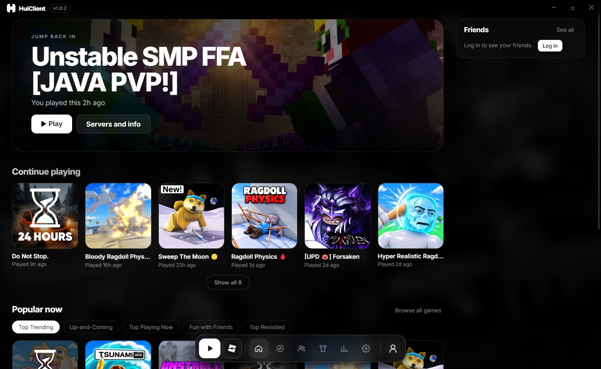

HuiClient
A Roblox launcher for Windows. Play, find your friends and switch accounts from one dark, quiet window.
Download for WindowsRoblox, the way it should open. Faster to start, easier to find your friends, and yours to change.
Look around
Scroll through HuiClient, or pick a screen.

What it does
Everything you open Roblox's website for, plus the things it doesn't do.
- Several Roblox windowsPlay on more than one account at the same time.
- Your accountsSign in once per account, switch with a click, or log in with a code from your phone.
- FriendsSee who's online and what they're playing, chat, and join them.
- ServersLook through a game's servers, pick the one you join, and rejoin old ones.
- Saved avatarsBrowse the avatars a player saved in 3D, with every item and its price.
- PlaytimeHow long you played today, this week, and in each game.
- Roblox versionsHuiClient installs Roblox and Studio itself, and can repair them or roll back.
- FastFlags and modsChange Roblox's hidden settings, and use your own cursor, sounds and fonts.
What's new
Installing
- Open the file you downloaded.
- Windows may say it protected your PC, because HuiClient isn't signed by a company. Choose More info, then Run anyway.
- Pick where it goes and press Install. Updates show up inside HuiClient when they're out.
To check that your download is the real one, run this in PowerShell in your Downloads folder. It should print the code under it.
Ready when you are.
Free, and it installs in seconds.
Download for Windows